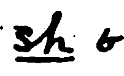
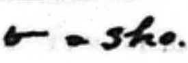
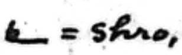
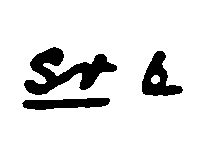
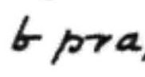

Compare SH Family by Different Writers
|
Callendar
Manual, Supplement |
Stevens
Teaching, Psalms,
Aesop's Fables |
Clarey
Revised |
| SC- |
scent
scarcely (abbr)
|
|
|
| SCH- |
school |
|
|
| SCR- |
Only egs are abbrevs |
|
|
| SCHR- |
No egs |
|
|
| SH- |
sha

shed
|
sho

|
|
| SHR- |
shred
|
shro

|
|
| SR- |
sra

Tisri
|
pra

See below.
|
|